We know why you’re here – you love gradients just as much as we do, and you want to see more! If you’ve read our blog, we’ve showed you a ton of gradient tutorials, had a lot of CSS gradient discussions, and we’ve even dived deep into why CSS gradients matter. If you haven’t read our other posts, give them a look-see when you can, but for now, we’re here to do something super cool – give you examples of awesome gradients in action. Join us as we walk through 16 awesome examples of CSS Gradients that – we think – will help you catch the CSS Gradient fever.
-
1) Scale API Homepage
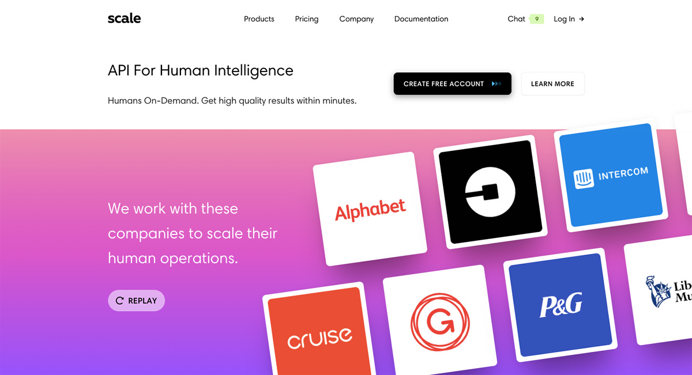 Scale doesn't just make a sweet API, they go HAM on those homepage gradients. Those pinks, those purples, that satisfying progression of beautiful, rich colors along a straight line – if you can’t tell, we get all the feels with this site. Can you identify what kind of gradient this is? Don't let those diagonal cards fool you, it’s a linear gradient starting from the top and moving to the bottom. Visit Site →
-
2) Stripe Homepage
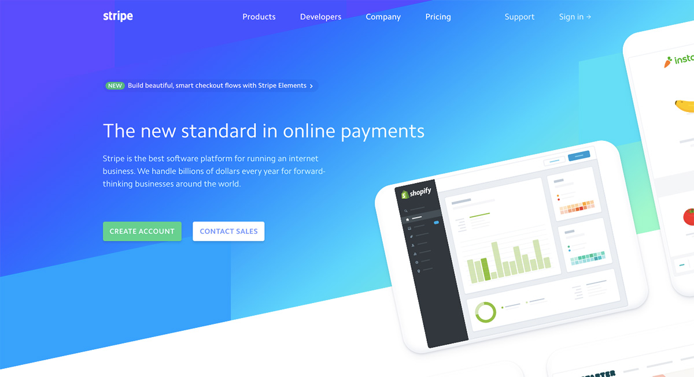 Can you blame us for loving this homepage? Stripe's gradient game is unparalleled. They implement several linear gradients in a rotated, grid pattern to capture dark blue hues that gradually fade into light greens and aquamarines. They’ve managed to define sharp lines in some spots to create angles and color separation (by manipulating the transparency of the directions and color stops) and allowing other colors to fade into new ones seamlessly. Visit Site →
-
3) Stripe Connect Page
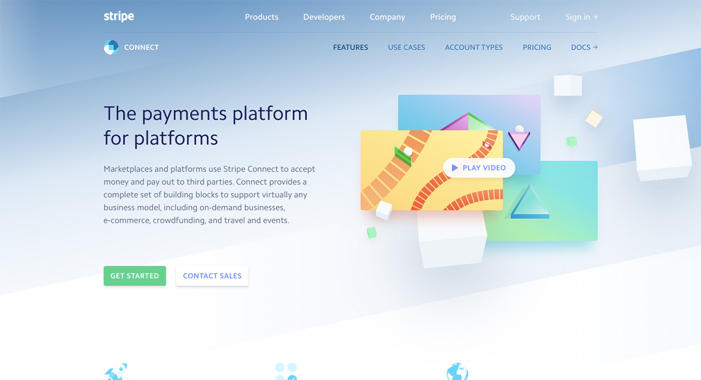 We couldn’t get away from Stripe right away – they’re all about the gradient, and we love the way they’ve designed their site. The connect page is especially unique. Notice how they keep a similar style consistently throughout each of their pages but implement subtle differences. That’s what we call engaging design. Here, they manipulate a blue-white gradient, starting with dark blues at the top and gradually fading into a white color toward the bottom and for the rest of the scroll. As with their homepage, they’ve implemented a few sharp lines within their gradient to separate the colors and create a wavy, line pattern that appears random. Visit Site →
-
4) Stripe Payments Page
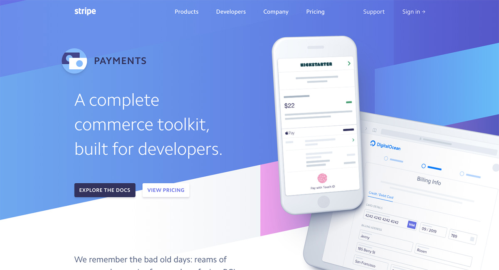 We. Love. Stripe. Gradients. There, we said it. And because we’ve said it, we’ve used their site as another example. Check out their payment page. That background is simply stunning! Not only do they implement a beautiful transition from dark green, to light green, to white, they also play with and manipulate the patterns within the linear pattern down the page. They’ve mixed in sharp color stops to separate the colors and creating unique angles, and even have a section of the gradient with tiny, angled vertical stripes. Visit Site →
-
5) Mixpanel Homepage
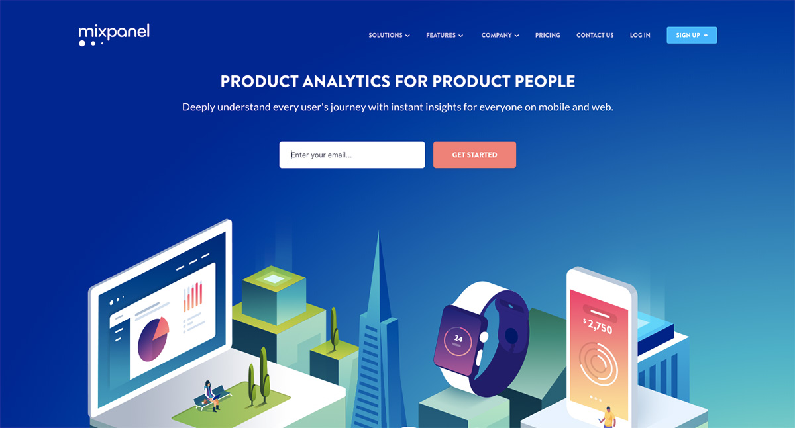 GUYS. Mixpanel is the ultimate linear gradient design we’ve been trying to explain. Check out what we’re talking about. See how that dark blue (almost purple) fades so gradually into progressively lighter blues so seamlessly that you can’t tell where one color begins and another ends? That’s the linear gradient we’re talking about. It continues for a bit as you scroll, then gradually gives way to an all-white background. It catches your eye as soon as the page loads, one of the biggest advantages of including a gradient in your site design. Visit Site →
-
6) Instagram Logo
Perhaps the most famous and well-known gradient of all, the Instagram logo. Simple, stunning, and aesthetic, Instagram took the radial gradient idea and mastered it. The genius is in its simplicity — you could easily design the logo with the radial-gradient techniques we’ve taught you. The radial gradient starts with a light yellow, orange at the bottom left corner of the logo and moves gradually toward the top right corner of the logo progressing to light purple, fuchsia, pink. It’s impossible to not be drawn to this simple gradient within their camera logo.
-
7) Instagram Guidelines Page
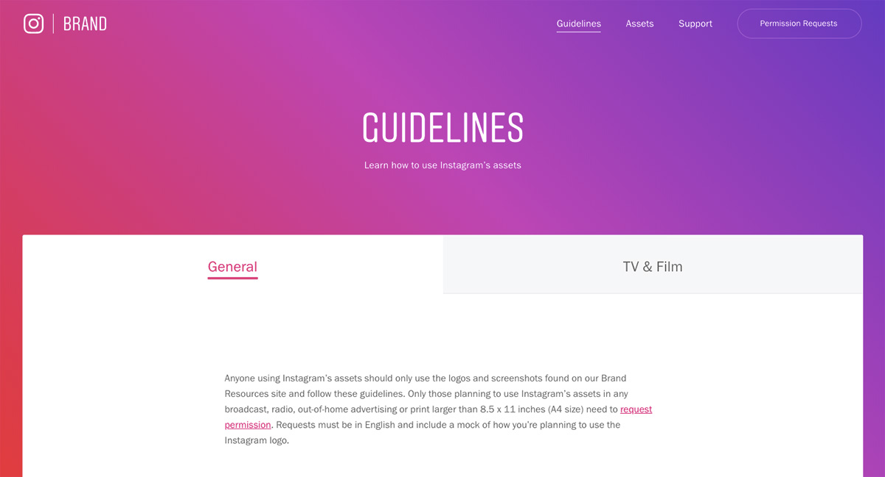 We’re not done with Instagram yet. In the nature of consistent branding (a lesson we should all learn), they’ve taken the gradient from their logo and added it to their branding guidelines page. The same lovely linear gradient along a straight line leading from the top right corner to the bottom left corner. The same, beautiful, straightforward design. You really can’t go wrong with this linear design. Visit Site →
-
8) Spectrum Background
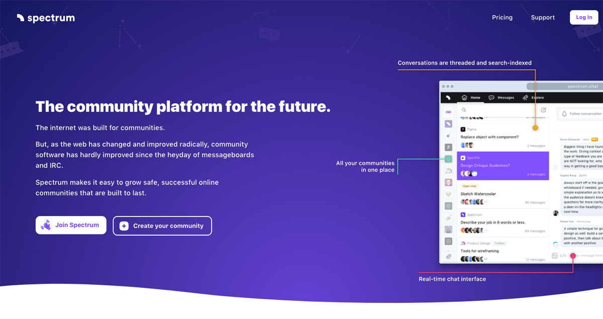 We can’t get over how simple gradient patterns can do so much for a web page. Check out the spectrum background on their homepage. Moving from a soft, translucent purple and gradually, and ever so slightly, moving toward a deeper purple, this gradient is a simple top to radial gradient. A sinuous curve cuts off the gradient from the rest of the page, giving way to a simpler white background. We think this is a clever way to draw your eye to the top of the page while not overwhelming the entire site with a dark gradient pattern. Visit Site →
-
9) Spectrum Community Search
In the middle of Spectrum’s homepage, you’ll find a clever little wavy box that’s filled with, you guessed it, another gradient. This is a fantastic way to implement a second gradient on the same page. Taking a monochromatic approach, spectrum has used a linear gradient this time, starting at the top of the wavy box with a light blue and moving toward that darker purplish-blue. Visit Site →
-
10) 3D For Designers Header
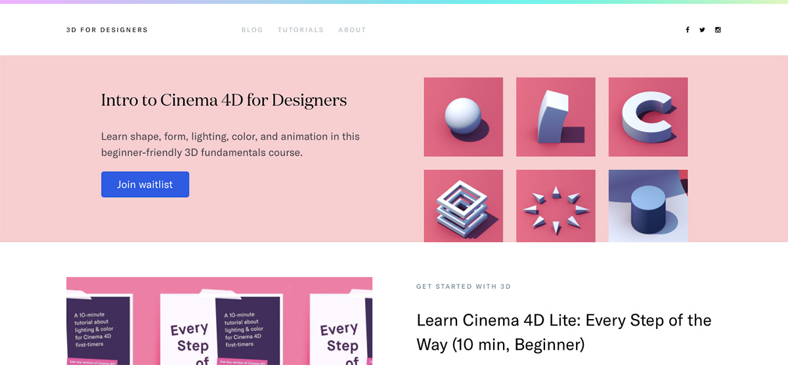 Something so simple can be so effective and captivating, and that’s exactly what 3D for Designers has done with their home page. Devon the founder doesn't implement an entire gradient background, instead, she put a simple, thin line at the top of the page gradually transitioning color from light purple to a light green. In the code Devon calls this "rainbow header" which is a perfect description of these fun pastels. It matches the color scheme of her brand, engages the audience, and doesn’t overwhelm. Visit Site →
-
11) 3D For Designers Email Form
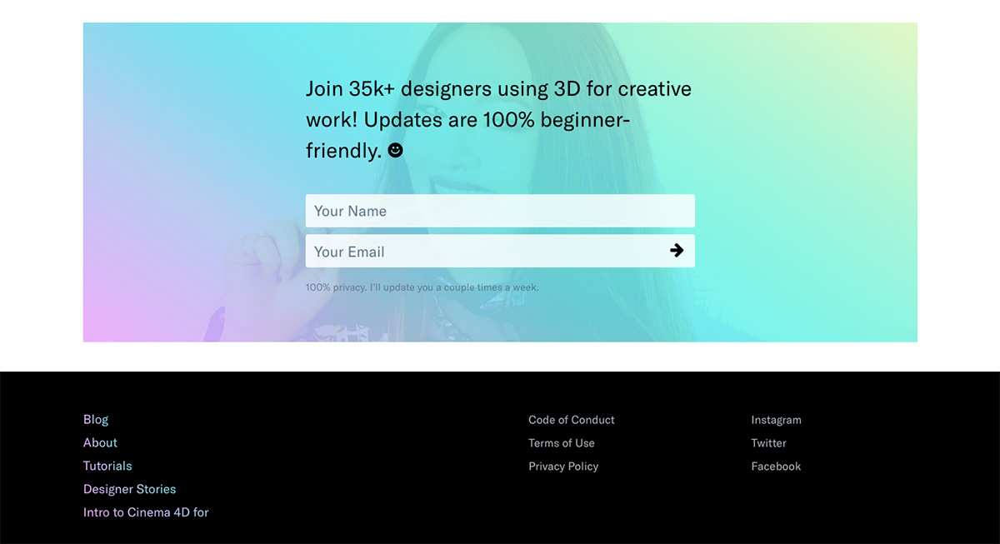 Scroll to the bottom of the page, and you’ve got it again. That beautiful, technicolor gradient, but this time, super transparent and transposed over an image. We love this design! It goes great with the theme of the brand and implements a fun way to include an image on the page. That linear gradient color selection is super engaging, too. From the bright purple leading all the way up to the transparent, lime green, we’re certainly captivated. Visit Site →
-
12) EthWorks
Ethworks knew what it was doing when it designed the sliding parallelogram (using Rellax 😎) design at the top of their homepage. This is a gradient unlike others we’ve seen, and a creative way to implement the simple coding we’ve been working through in a unique, intricate way. Check out their use of light, pastel colors with sharp angles and distinctions, as well as their gradual color progressions from the top of the page to the bottom. Visit Site →
-
13) Baremetrics
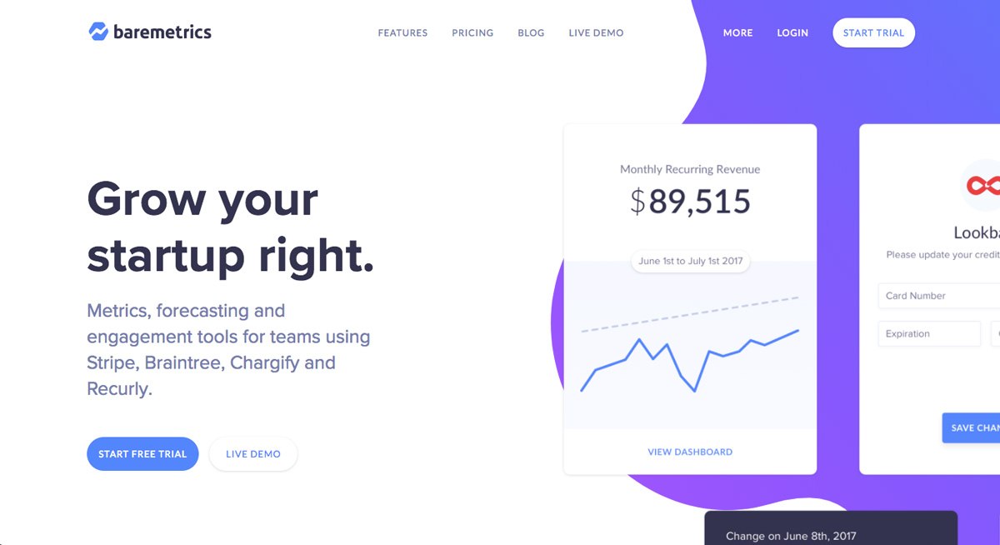 What we like best about the Baremetrics gradient is its simple and subtle design. When you look at the page on full screen, you see a wiggly line dividing the background between two colors – white and purple. This simple divider creates a pull toward the text and makes for a beautiful, uncomplicated way to engage your audience and draw them in to your website. Visit Site →
-
14) Polygon
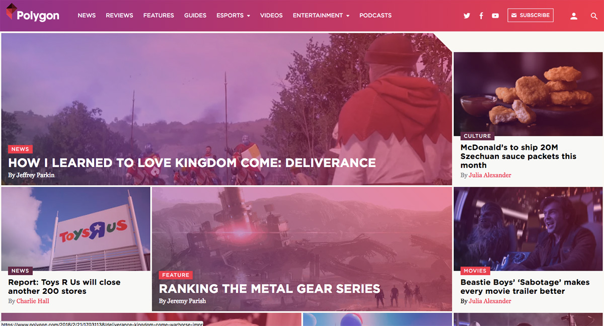 The Polygon gradient design is a bit reminiscent of the gradient style we see in the Instagram logo and page, but it uses it in a different way. It still has that gradual progression of colors along a linear line, but this time, it moves horizontally on their navigation strip at the top of the homepage, and they even implement the gradient over the images on their site! Using gradients as a mask over images is a great idea and can be accomplished simply with transparency! Visit Site →
-
15) Algolia
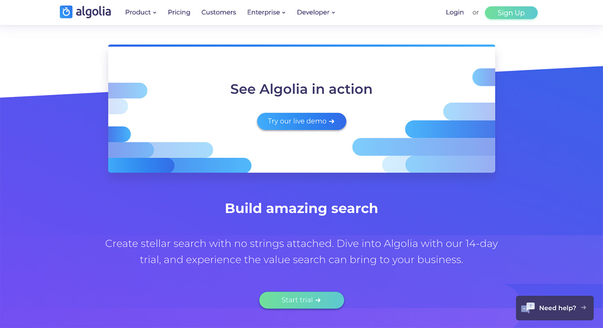 This website uses their gradients in such a simple, subtle, and eye-catching way. Instead of throwing a gradient across their entire background or masking it over their images, they use it on their buttons, instead! We love this innovative design. It gives their clean page a splash of color and brings a unique take on linear gradients to website design. Visit Site →
-
16) Indie Hackers
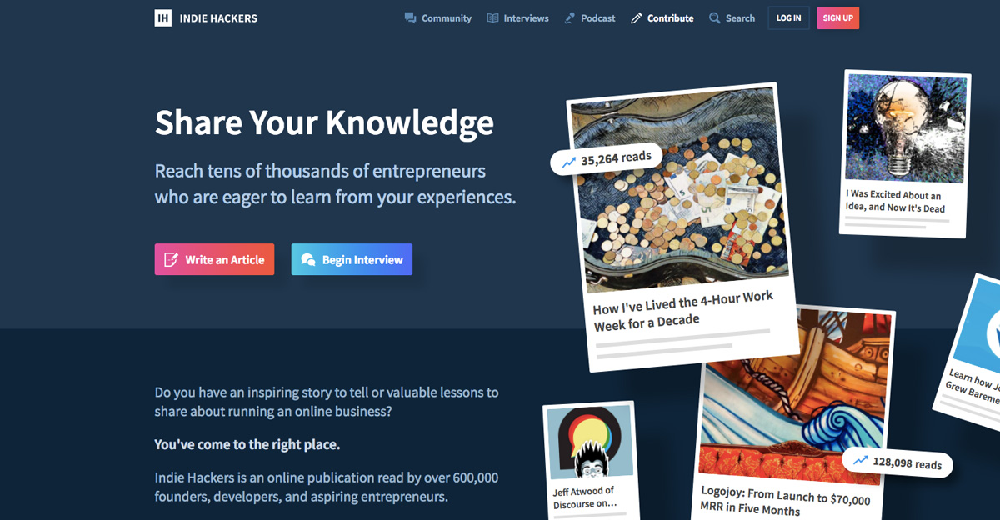 Gradient buttons galore! Courtland really wants to emphasize the calls to actions on the page and what better way than some sweet, candied buttons. For the most part, the user interface of the website is a subduded deep blue, but scrolling around the site, your eye is immediately pulled into the gorgeous prominent buttons. Marketing + design + development brilliance. Visit Site →
Closing
We love all of those examples, and we bet you do, too. The end idea here is that CSS Gradients are everywhere, and we can guarantee that you’ll start noticing them a lot more, too! Keep an eye out for your favorite gradients across your web travels!